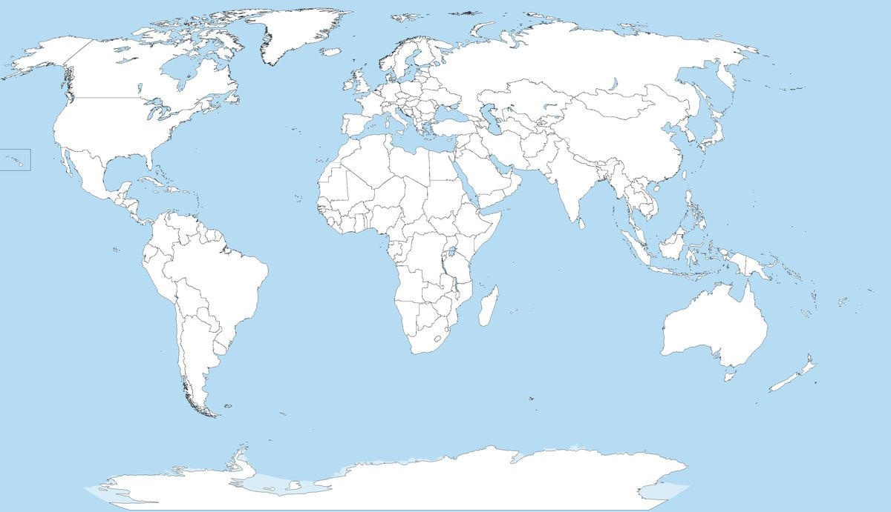

<Hello World!>
<It's Alessandro Vigorelli>
<An engineering student>
Linkedin: Alessandro Vigorelli_Scroll down ↓

This project focuses on the development and enhancement of a smartphone application designed to serve as an interactive learning tool for analyzing linear systems modeled as transfer functions.
Developed using the Flutter framework, the app aims to modernize control education by allowing students to visualize complex concepts directly on their mobile devices.
Key features of the app include:
Attachment: App_ECC_2026.pdf

Designed and simulated an automated manufacturing cell using ABB RobotStudio
Key achievements include:
Attachment: RobotStudio_Presentation.pdf

The objective of this study is to determine human reaction times by comparing the results obtained through the Pupil Core system with those measured using the High-Speed camera, which serves as the reference system. The aim is to quantify the deviation between the two methods and assess the reliability of the Pupil Core algorithm. This study highlights the difficulties in achieving optimal reaction time measurements.
Attachment: Final_Report.pdf

ENG
I am a student of Automation Engineering with a strong inclination toward a deep understanding of complex systems and their translation into concrete solutions. My main interest lies at the intersection of mathematical modeling, control systems, and software development—fields I approach with an analytical mindset, always oriented toward real-world applications.
I am a rational, curious, and well-organized person, with a strong attention to the practical aspects of everyday life (work, opportunities, travel, and financial management). I often seek efficient solutions with a solid value-for-money ratio, both in technology and in personal choices.
I communicate in a direct manner, preferring a clear, honest, concise, and human style, without unnecessary wording.
ITA
Sono uno studente di Ingegneria dell’Automazione con una forte inclinazione verso la comprensione profonda dei sistemi complessi e la loro traduzione in soluzioni concrete. Il mio interesse principale è il punto di incontro tra modellazione matematica, controllo dei sistemi e sviluppo software, ambiti che affronto sempre con un approccio analitico ma orientato all’applicazione reale.
Sono una persona razionale, curiosa e organizzata, ma anche attenta agli aspetti concreti della vita quotidiana (lavoro, opportunità, viaggi, gestione economica). Cerco spesso soluzioni efficienti e con un buon rapporto qualità-prezzo, sia nella tecnologia sia nelle scelte personali.
Comunico in modo diretto, preferendo uno stile chiaro, sincero, sintetico e umano, senza giri di parole inutili.
